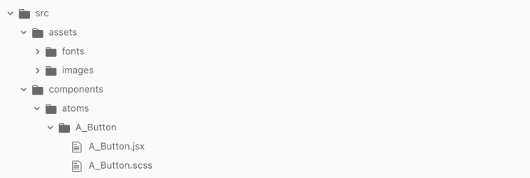

Принципы Universal Design Framework
Этот принцип основывается на особой сиситеме наименования компонентов и в дизайне и в коде. Также мы используем особую систему префиксов для того, чтобы быстро ориетироваться в структурных слоях компонента. Такой подход помогает быстрее искать нужный компонент в папке проекта или в дизайн-системе, упрощает процесс его изоляции.
В этом туториале мы расскажем о системе сквозного наименования компонентов по принципам UDF на примере button. Подробнее о UDF ты можешь прочитать в книге Данилы Тимофеева.
Пример
Мы ведём структурную и последовательную работу проектирования компонентов, поэтому начинаем с проработки его дизайна. Для начала определяем какая функциональность планируется и по системе UDF выбираем префикс. Кнопка представляет из себя текстовую метку и ее обводку. Внутри себя button не содержит каких-либо компонентов поэтому мы называем её А_Button.
Как только кнопка создана в Figma или любом другом инструменте для проектирования интерфейсов, мы можем переносить её в папку проекта, сохраняя сквозной нейминг.
В папке проекта мы создаём два файла, html и css, называем их соответственно. Затем создаём кнопку с классом A_Button. Вот так выглядит структура файлов.
<a class=”A_Button” href="#">Подписаться</a>Затем задаём стили для кнопки с классом A_Button.
.A_Button {
padding: 14px 20px;
border-radius: 10px;
font-size: 20px;
font-weight: 500;
color: #FFFFFF;
background-color: #B7FCFC;
cursor: pointer;
user-select: none;
}Получаем следующий результат в виде кнопки.
Заключение
Этот принцип помогает нам структурировать компоненты и быстро их находить. Это особенно важно, когда проектирование компонентов ведётся изолированно. Подробнее о принципе изоляции ты можешь прочитать в этом уроке Проектирование в изоляции.
Компоненты
Продолжи изучать туториалы с новыми знаниями о принципе структурного наименования компонентов по UDF.